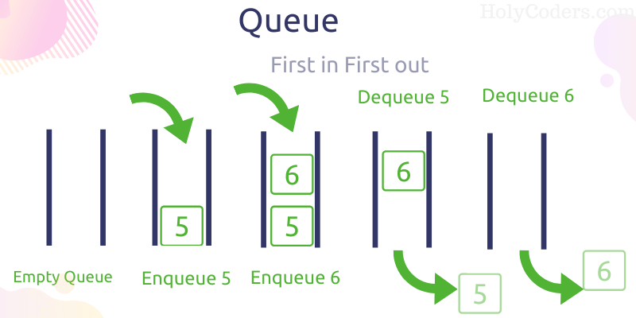
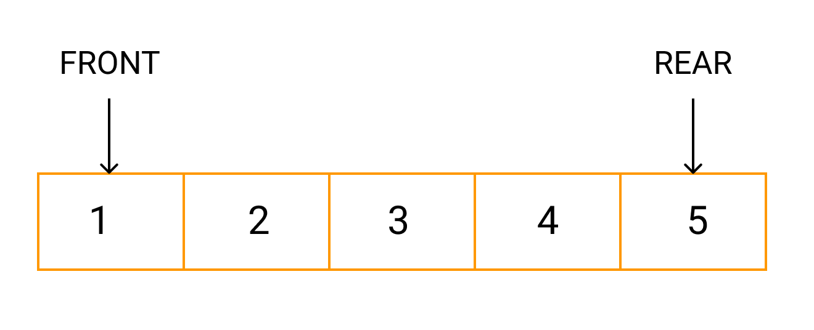
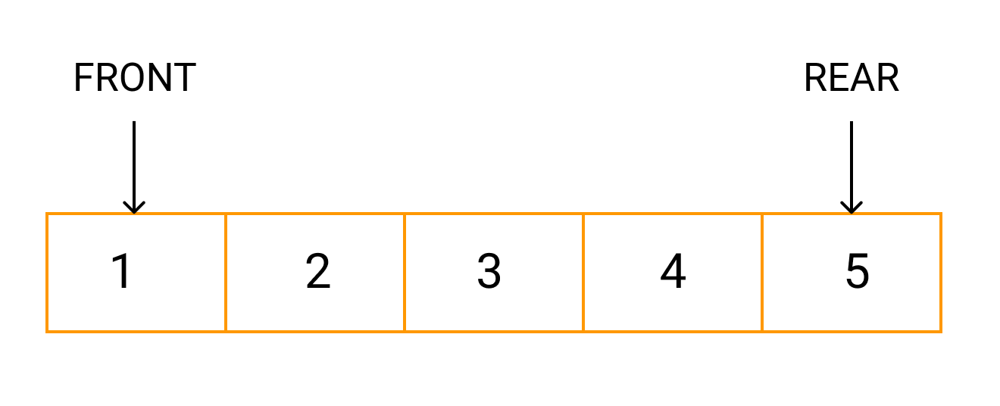

队列
queue
英 [kjuː] 美 [kjuː]
n.
(储存的数据)队列;(人、汽车等的)队，行列
v.
(人、车等)排队等候;(使)排队;列队等待
第三人称单数： queues
复数： queues
现在分词： queuing
过去式： queued
过去分词： queued
===================================
*逻辑结构
*运算
*物理结构
=============================================================
逻辑结构
=============================================================
逻辑结构: 先进先出(First In First Out, FIFO)。
队列像个管子，像生活中的排队，只允许在结尾添加元素，在最前头删除元素。

 添加数据的一端：队尾 rear
删除数据的一端: 队首 front

=============================================================
添加数据的一端：队尾 rear
删除数据的一端: 队首 front

=============================================================
运算
=============================================================
isEmpty 判断队列是否为空
enQueue 入队列
denQueue 出队列
peek 获取头元素
size 获取队列长度
=============================================================
物理结构
=============================================================
*顺序存储
Java中数组索引从0开始，因此初始化时，可以令:front=rear=-1
假溢出：
一边入队，一边出队，可能出现rear指针到达数组结尾，但是数组中有多余空位。
解决假溢出：
1 平移所有元素到数组开头
2 循环队列
链式存储
作业:
1 完成队列代码 10分钟
2 打字：队列 10秒6个